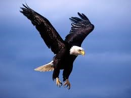

Se distribuye principalmente en zonas áridas, semiáridas y montañosas con bosques templados, aunque prefiere ambientes templados. También en montañas cercanas a valles, laderas de montañas, cañadas y praderas.
El área de distribución de este ave abarca América del Norte, Europa, Asia y norte de África, y tiene poblaciones sedentarias en Gran Bretaña, Escocia, Noruega, Italia, Japón y los Alpes. En Asia Central y Oriente Medio el águila real se usa para la cetrería y para cazar antílopes.
- Mide entre 90 centímetros y un metro
- Posee una vista extraordinaria
- Su pico es muy afilado y posee una ligera curva hacia abajo
- Es capaz de volar durante muchas horas
- Es uno de los animales de caza con mayor acción y astucia al momento de obtener una presa
Regresar a la página de Inicio